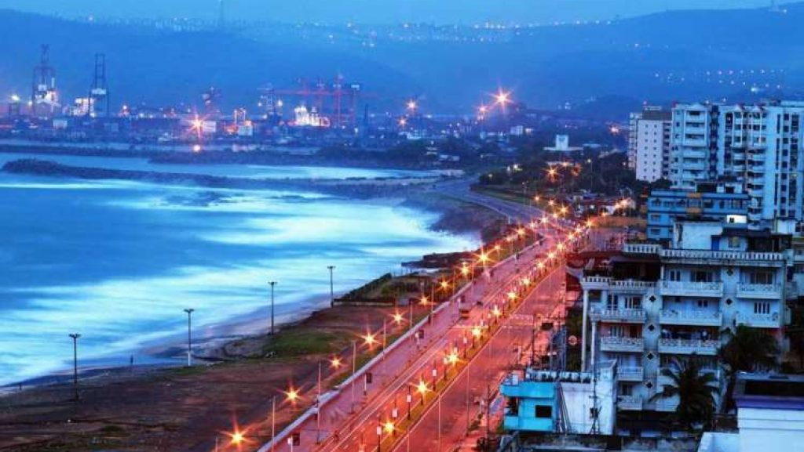

TOURISM PLACES There is nothing like escaping to the seas from our busy, chaotic city lives. The feel of fresh air caressing our hair and warm waves splashing against our feet is one of the ideal forms of vacation. This exact dream like holiday destination can be yours in Visakhapatnam, also known as Vizag. A port city, it is known for its variety of industries, but beyond grey, concrete buildings are beautiful beaches, temples, caves and valleys.
The city is perpetually thronging with tourists, every one escaping to a few days of freedom and relief from hectic life. Imagine being able to visit a place that is nothing short of a treasure land. From history to culture to unlimited activities and unlimited places to visit, you have it all right here in Vizag.

click hereto go home
 click hereto go home
click hereto go home